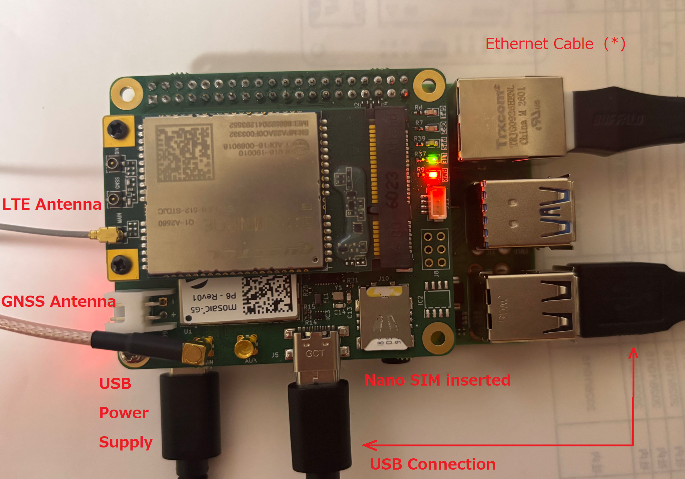
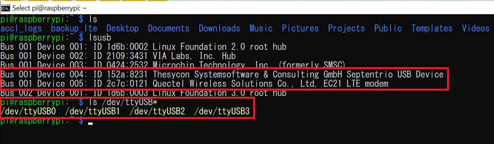
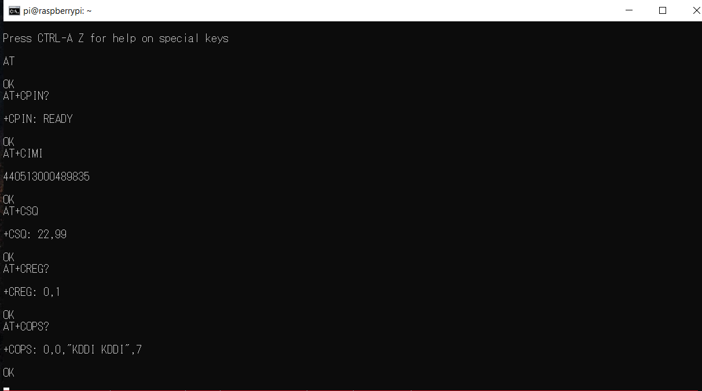
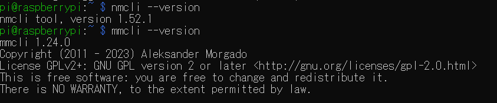
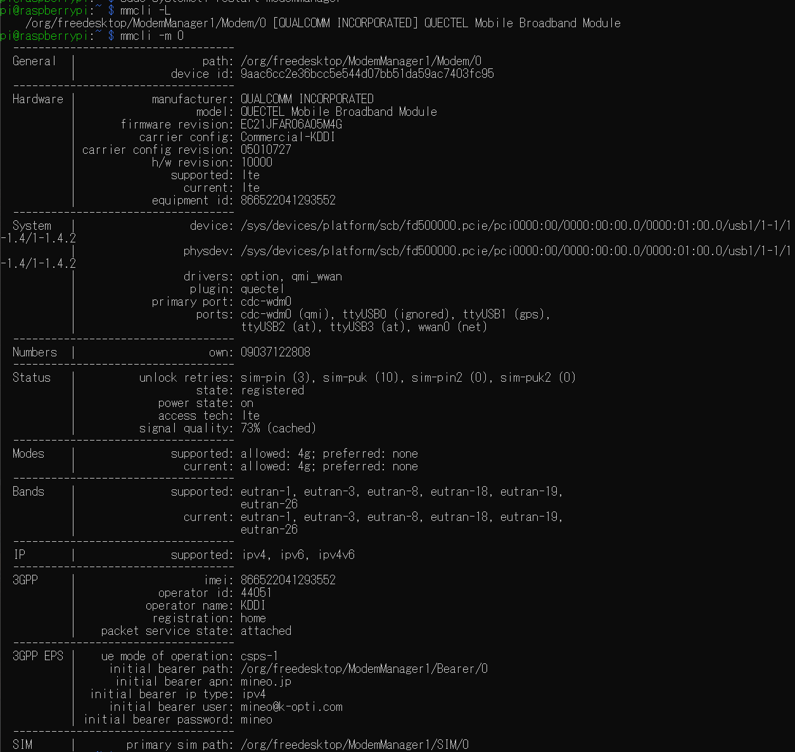
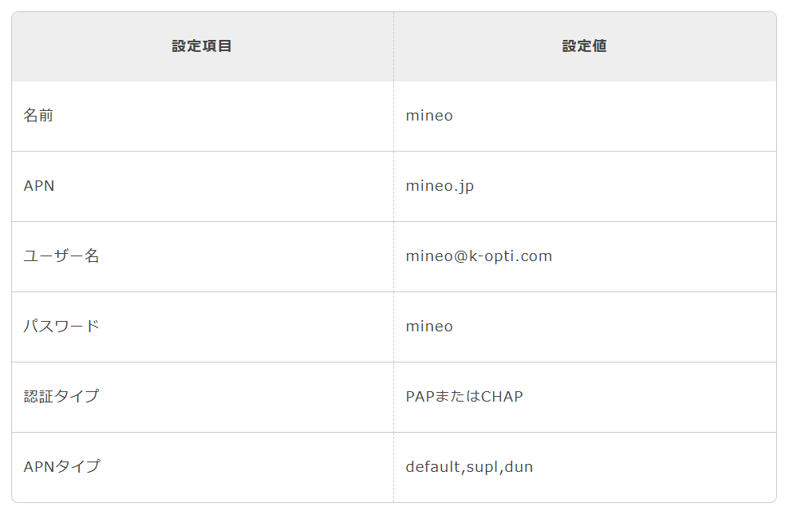
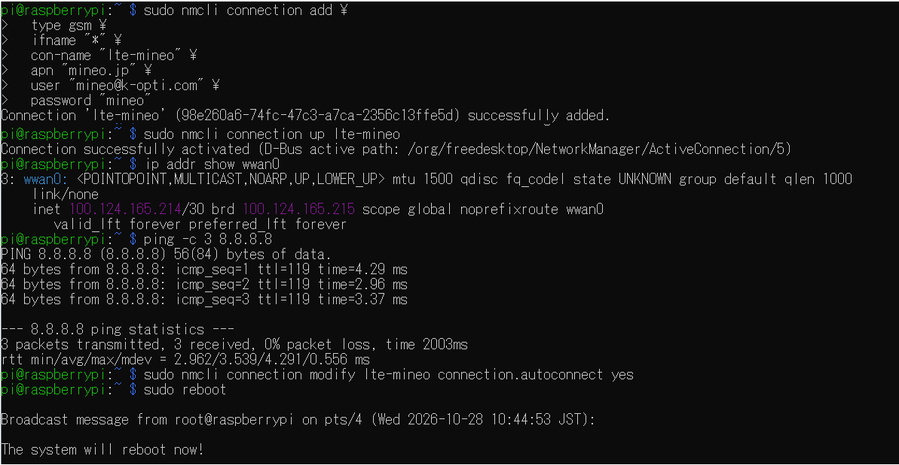

LTE Connectivity with the iChidori-Crest¶
Overview¶
The iChidori-Crest supports LTE connectivity through a cellular modem installed in its mPCIe slot. When combined with a Raspberry Pi, it provides Internet connectivity for the system.
The LTE configuration process depends on the modem being used, as setup procedures and carrier settings may vary between modem models.
This guide demonstrates a complete LTE setup using the Quectel EC21-J modem, from initial hardware detection and SIM configuration to automatic connection at startup.
The configuration follows the standard Linux networking stack:
- ModemManager detects and manages the cellular modem, including SIM status and mobile network registration.
- NetworkManager configures and manages the LTE connection profile and network interface.
Hardware Requirements¶
- Raspberry Pi 4 with the iChidori-Crest installed.
- Raspberry Pi OS.
- Quectel EC21-J installed in the mPCIe slot.
- Active nano-SIM card inserted into the iChidori-Crest SIM slot.
- LTE antenna connected to the modem's antenna port.
- Suitable 5 V power supply for the Raspberry Pi.
- A USB Type-C cable connecting the Raspberry Pi to the iChidori-Crest's USB port.
A valid SIM subscription, compatible carrier settings, and sufficient cellular coverage are required for Internet access.
Example Configuration
This guide uses the Quectel EC21-J with a mineo SIM operating on the au (KDDI) network. The APN and authentication settings may differ depending on the SIM provider and must be configured accordingly.
Hardware Setup¶

Note
The LAN cable is used only to access the Raspberry Pi via SSH during the initial setup and configuration. It is not required for LTE connectivity.
1. Verify LTE Modem Detection¶
After powering on the Raspberry Pi with the LTE modem installed on the iChidori-Crest, verify that the modem is detected over USB.
Check USB Detection¶
Execute the following commands:
Example output:

The device ID and bus information may differ depending on the hardware and USB configuration.
Quectel EC21-J USB Serial Interfaces
The EC21-J exposes four USB serial interfaces. Each serves a specific purpose:
| Interface | Function | Description |
|---|---|---|
/dev/ttyUSB0 |
Modem / diagnostics | General modem control and diagnostic functions. |
/dev/ttyUSB1 |
GNSS NMEA output | GNSS data output, if supported and enabled in the modem configuration. |
/dev/ttyUSB2 |
AT commands | Primary interface for sending AT commands. |
/dev/ttyUSB3 |
AT commands | Secondary AT command interface. |
The interface mapping above is based on the tested EC21-J configuration. Actual assignments may vary depending on modem firmware and USB configuration. Verify the available interfaces on the target device before use.
GNSS and LTE USB Interfaces
The Septentrio mosaic-G5 GNSS module typically appears as /dev/ttyACM0 and /dev/ttyACM1, while the Quectel LTE modem uses /dev/ttyUSBx interfaces.
These device names identify different hardware interfaces and should not be confused.
2. Verify Modem Communication and SIM Status¶
This step verifies communication with the Quectel EC21-J modem, checks the SIM card and mobile network status, and prepares the modem for LTE connection configuration.
Install an AT Command Terminal¶
AT commands can be sent to the LTE modem through its AT command interface using a serial terminal or other serial communication tools.
This guide uses minicom as an example. Install it if it is not already available:
AT Command Terminal Options
This guide uses minicom, but any serial terminal tool works. Common alternatives include screen and tio. The choice depends on personal preference.
Next, open the EC21-J AT command interface:
The example uses /dev/ttyUSB2 as the AT command interface. Confirm the port assignment according to the USB serial interface mapping described in Step 1.
If the characters you type are not displayed, enable local echo by pressing Ctrl+A, followed by E.
Verify Modem and SIM Status¶
Enter the following AT commands to confirm that the modem and SIM are ready:
| AT Command | Purpose | Expected Response |
|---|---|---|
AT |
Verify communication | OK |
AT+CPIN? |
Check SIM card status | +CPIN: READY |
AT+CIMI |
Read SIM IMSI | Numeric IMSI value |
AT+CSQ |
Check signal strength | +CSQ: <rssi>,<ber> |
Verify Network Registration¶
Execute the following commands:
| AT Command | Purpose |
|---|---|
AT+CEREG? |
Check LTE/EPS network registration status. |
AT+COPS? |
Check the selected mobile network operator. |
A response containing +CEREG: 0,1 confirms that the modem is registered on its home network.
Example output:

Network Registration
If the modem is not registered, verify SIM activation, antenna connection, signal strength, and carrier coverage before proceeding.
After verifying modem and SIM status, exit Minicom. The APN settings will be configured in the next step through NetworkManager.
3. Install and Configure ModemManager¶
ModemManager handles modem detection and coordinates with NetworkManager to manage the LTE connection.
Install ModemManager¶
Install ModemManager if it is not already available:
Verify that both tools are available:
Raspberry Pi OS includes NetworkManager by default, so no additional installation is required.
Example output:

Verify ModemManager Detects the Modem¶
Run the following command to check whether ModemManager detects the LTE modem:
Expected output:
Troubleshooting: No modems were found
During testing, mmcli -L returned No modems were found, even though the EC21-J was installed and powered.
1. Verify USB device detection
First, check whether the Raspberry Pi recognizes the modem over USB:
Example output:
This confirms that the Linux kernel recognizes the EC21-J as a USB device. However, USB detection alone does not guarantee that ModemManager can manage the modem.
2. Inspect udev properties
Check the udev properties of the modem's serial interface:
During testing, the following properties were observed:
E: ID_MODEL=Android
E: ID_MODEL_ID=0121
E: ID_VENDOR=Android
E: ID_VENDOR_ID=2c7c
E: ID_VENDOR_FROM_DATABASE=Quectel Wireless Solutions Co., Ltd.
E: ID_MODEL_FROM_DATABASE=EC21 LTE modem
The EC21-J KDDI firmware reports Android as its USB vendor and product descriptor strings, while its USB vendor and product IDs identify the device as Quectel EC21 (2c7c:0121).
In this configuration, the device was not tagged as a ModemManager candidate (ID_MM_CANDIDATE=1). This prevented ModemManager from detecting the modem.
3. Apply a custom udev rule
Create a udev rule to identify the EC21-J using its USB vendor and product IDs instead of the descriptor strings:
echo 'ATTRS{idVendor}=="2c7c", ATTRS{idProduct}=="0121", ENV{ID_MM_CANDIDATE}="1"' \
| sudo tee /etc/udev/rules.d/99-quectel-ec21.rules
Reload the udev rules and restart ModemManager:
sudo udevadm control --reload-rules
sudo udevadm trigger
sudo systemctl restart ModemManager
sleep 5
4. Verify modem detection
Run the detection command again:
Expected output:
The EC21-J should now be detected by ModemManager.
Note: This workaround was verified with the EC21-J KDDI firmware variant. Other EC21 firmware versions or modem models may not require this additional udev rule.
After successful detection, retrieve the modem details to check its status and available interfaces:
Example output:

4. Create the LTE Connection Profile¶

Create a connection profile with the APN credentials. This example uses mineo on the au (KDDI) network:
sudo nmcli connection add \
type gsm \
ifname "*" \
con-name "lte-mineo" \
apn "mineo.jp" \
user "mineo@k-opti.com" \
password "mineo"
Expected output:
APN Settings
The apn, user, and password values must match the SIM provider's configuration. Contact the carrier or refer to its documentation for the correct APN and authentication settings.
5. Activate and Verify LTE Connectivity¶
Activate the Connection¶
Activate the LTE connection profile:
Expected output:
Connection successfully activated (D-Bus active path: /org/freedesktop/NetworkManager/ActiveConnection/5)
Verify the Network Interface¶
Check the LTE network interface:
The wwan0 interface should have an assigned IP address.
Example output:
3: wwan0: <POINTOPOINT,MULTICAST,NOARP,UP,LOWER_UP> mtu 1500 ...
inet 100.124.165.x/30 brd 100.124.165.x scope global noprefixroute wwan0
The assigned IP address may differ depending on the carrier and network configuration.
Test Internet Connectivity¶
First, test IP connectivity:
Example output:
64 bytes from 8.8.8.8: icmp_seq=1 ttl=119 time=4.29 ms
64 bytes from 8.8.8.8: icmp_seq=2 ttl=119 time=2.96 ms
64 bytes from 8.8.8.8: icmp_seq=3 ttl=119 time=3.37 ms
Next, verify DNS resolution:
A successful response indicates that the hostname can be resolved.
LTE Connection Established
If the LTE interface is up, an IP address is assigned, and the connectivity tests succeed, the Raspberry Pi is connected to the Internet over LTE.
6. Configure Automatic Connection at Startup¶
NetworkManager supports automatic connection activation through its connection profile settings.
Enable autoconnect for the LTE connection:
Verify the setting:
Expected output:
NetworkManager automatically attempts to activate the connection profile at startup and reconnects when possible if the connection is interrupted. No additional systemd service configuration is required.
Example output:

Summary¶
This guide demonstrated how to configure LTE connectivity on the iChidori-Crest using the Quectel EC21-J modem and a mineo SIM on the au (KDDI) network.
Once configured, the Raspberry Pi can access the Internet through the LTE network without requiring a wired LAN connection.
The same configuration approach can be adapted for other supported LTE modems and SIM providers by adjusting the modem-specific settings and APN credentials.